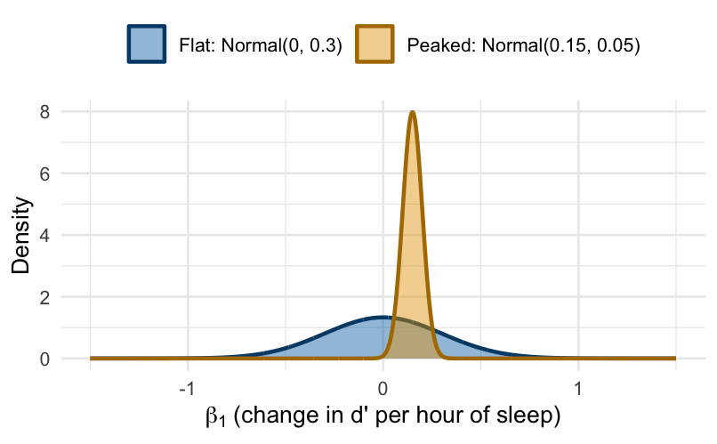
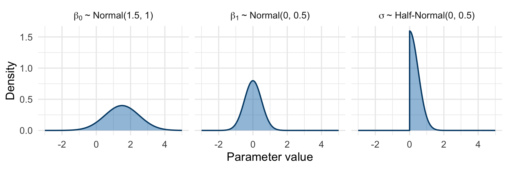
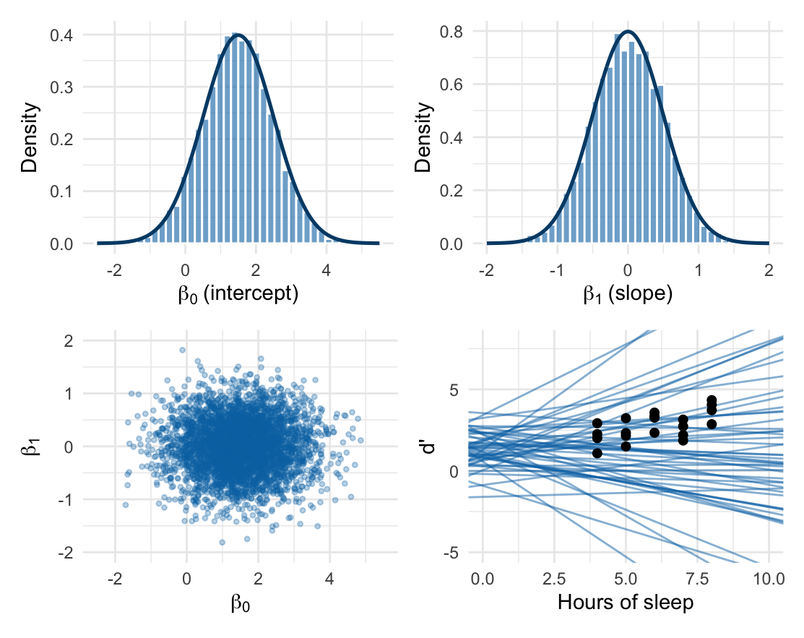
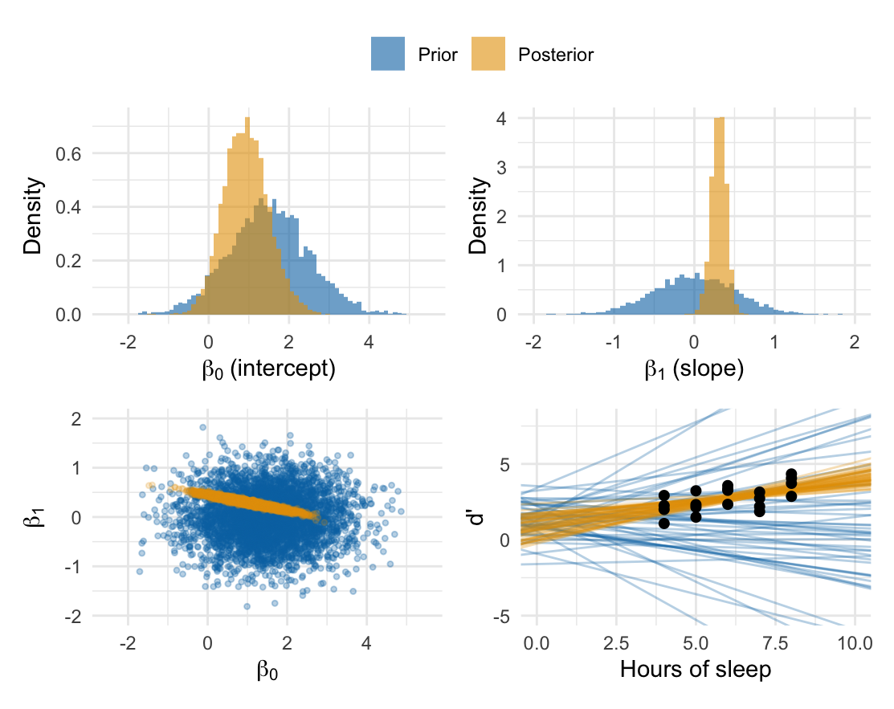
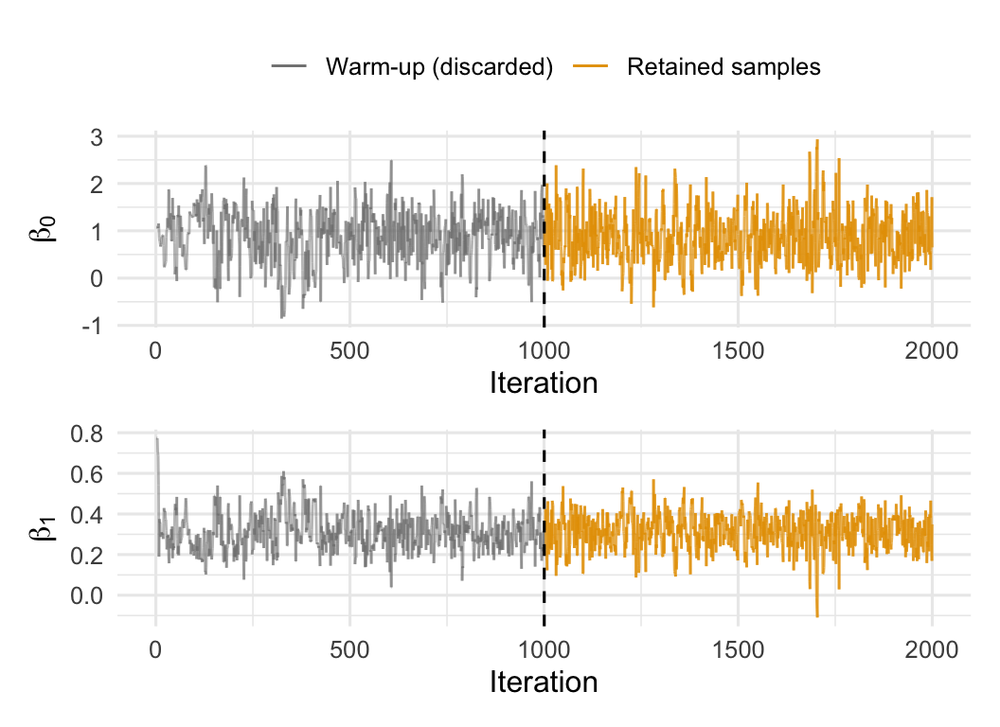

Demystifying Bayesian Model Fitting
Rithwik · BCS519, Fall 2026
Scientific and statistical inference with Bayesian models
When you specify a model or hypothesis, you are essentially making a claim about the small world of your experiment and the data generated by it. The model formula specifies the relationship you claim between the variables of interest in this world. And the prior specifies your current state of knowledge (or belief) about those relationships. Bayesian model fitting then tells you what the data implies within this small world; whether that tells you anything about the real world is a scientific question, not a statistical one.
Consider the experimental world in which you hypothesize an effect of hours of sleep on a night on perceptual sensitivity the following day as a linear model. The model formula that describes it is: \[d' = \beta_0 + \beta_1\times \text{hours\_sleep} + \mathcal{N}(0,\ \sigma)\]
Note that by choosing to model it as a linear model, you get with it all the assumptions made by linear models (normally distributed residuals, homoscedasticity, linear effects, etc).
The priors describe your current beliefs or informational state. This could be well informed or weakly informed (Figure 1). The priors essentially quantify your uncertainty about the parameters in the experimental world (in the above example, \(\beta_0,\ \beta_1,\ \sigma\)).
Priors are typically informed by previous research, or can be reasonable guesses based on what you already know about your measures. For example (see Figure 2):
- Perceptual sensitivity (\(d'\)) in tasks calibrated near threshold usually lies between about 0.5 and 2.5; values above 4 means performance is essentially at ceiling. This gives a sensible range for the intercept \(\beta_0\), and we may specify a prior like Normal(1.5, 1).
- Effects should be scaled to the measure. If \(d'\) is around 0.5–2.5, one extra hour of sleep is unlikely to shift it by a full unit; changes of a few tenths are far more plausible. A prior like Normal(0, 0.5) on \(\beta_1\) allows for effects of this size in either direction.
- Residual variability (\(\sigma\)) must be positive, and should be on the order of how much \(d'\) varies across blocks (a few tenths), not several units. A distribution that is only defined for positive values, like a Half-Normal(0, 0.5), would be a good choice.
- Another example: reaction times in simple perceptual decision tasks typically fall between about 200 and 1000 ms. If you were modelling reaction times, a prior on the intercept that puts substantial probability below 100 ms or above 3 s is claiming something you already know to be implausible.

While Bayesian model fitting packages may provide reasonable defaults, it is always a good exercise to specify your priors yourself. To understand why, it helps to distinguish two kinds of inference. Statistical inference happens inside the model: given the model formula, the priors and the data, Bayes’ theorem mechanically turns the prior into the posterior. This is purely numerical inference. Scientific inference is everything around it: choosing a model formula and priors that reflect your theory and what you already know, and interpreting what the resulting posterior means for that theory. Your model formula and priors are how your scientific knowledge enters the statistical machinery, but scientific inference goes further than that: “the meaning of statistical analysis is not found in the data [or the model], but rather in our theories” - McElreath.
This document currently does not cover prior selection more broadly (remember weakly regularizing priors and sensitivity analysis; maybe in the future).
From prior to posterior
Bayesian model fitting is the process of updating the prior (the distribution of parameter values that you thought plausible before seeing the data) in light of the data, using Bayes’ theorem, to obtain the posterior (the distribution of parameter values that remain plausible after seeing the data).
Conceptually, this works as follows. To keep things simple and easy to visualize, we will only consider the two coefficients (\(\beta_0,\ \beta_1\)) and ignore the residual standard deviation (\(\sigma\)) for now. Imagine drawing samples from your priors: each time, you draw one value from the prior for \(\beta_0\) and one from the prior for \(\beta_1\). Each draw is therefore a pair \((\beta_0,\ \beta_1)\), and each pair describes one hypothetical experimental world. If you repeat this many times, the pairs build up the joint prior distribution: how plausible you consider each combination of intercept and slope before seeing the data (Figure 3).

Each prior draw is a candidate world: a specific line relating hours of sleep to \(d'\). For each candidate, we can ask: if this were the experimental world, how probable is the data we actually observed? This quantity is the likelihood. Lines that pass close to the data points make the observed data quite probable; lines that miss them make it very improbable.
Bayes’ theorem combines the two sources of information: \[\underbrace{p(\beta_0, \beta_1 \mid \text{data})}_{\text{posterior}} \;\propto\; \underbrace{p(\text{data} \mid \beta_0, \beta_1)}_{\text{likelihood}} \times \underbrace{p(\beta_0, \beta_1)}_{\text{prior}}\]
In other words: how plausible a candidate world is after seeing the data is proportional to how plausible the candidate world was before (the prior), weighted by how well it predicts the data (the likelihood). Worlds that were plausible to begin with and that predict the data well survive; the rest fade away. What remains is the posterior (Figure 4).

As you can see, the data have narrowed down the plausible worlds considerably. The posteriors for \(\beta_0\) and \(\beta_1\) are much narrower than the priors, and of all the lines the prior allowed, only a narrow bundle passing close to the data remains.
Practically
While the above schematic illustrates the idea behind Bayesian model fitting, it is not how model fitting is implemented in practice. Real models usually have many more parameters, and the number of candidate worlds grows exponentially with each one. Even in the simple case above (Figure 4), the posterior is much more concentrated than the prior: if you drew candidates from the prior and weighted each one, you would spend most of your time (and computing power) evaluating candidate worlds that are highly implausible given your data. Instead, the posterior is obtained using a family of clever computational algorithms called Markov chain Monte Carlo (MCMC).
MCMC methods approximate the posterior without ever computing it in full: they only evaluate prior \(\times\) likelihood at the parameter values they visit. Each chain works like a walker exploring parameter space: it starts at a random location, and at every step it considers moving to a nearby location. It always moves there if it is more plausible and only sometimes if it is less plausible, and so the chain ends up spending time in each region in proportion to its posterior plausibility1. The first steps still reflect the chain’s random starting point, so initial samples from this warm-up period are discarded; the remaining positions are samples from the posterior, like the orange draws in Figure 4. Figure 5 shows one such chain from our fit.

In practice, several chains are run in parallel, each from a different random starting point. If they all end up exploring the same region, that is reassuring evidence that they have found the posterior, and their retained samples are pooled together. Our fit used four chains of 1,000 retained samples each, giving the 4,000 posterior draws in Figure 4.
Hypothesis testing with your posterior samples
The posterior samples you get through MCMC sampling represent your updated beliefs about the parameters in your model. They are not an analytical solution, but literally a collection of samples (Table 1). If the chains have converged, you can treat these samples as a good approximation of the true posterior, and use them to make inferences about the parameters, and hence about the relative plausibility of the candidate worlds.
| \(\beta_0\) | \(\beta_1\) | \(\sigma\) |
|---|---|---|
| 0.961 | 0.321 | 0.587 |
| 0.454 | 0.365 | 0.704 |
| 0.681 | 0.321 | 0.635 |
| 0.282 | 0.424 | 0.732 |
| 1.510 | 0.225 | 0.792 |
| 1.460 | 0.220 | 0.782 |
Before we look at examples, there is one caveat that applies to everything that follows: every conclusion is conditional on the model formula (and its assumptions, such as linearity and normally distributed residuals), the priors, and the data. A statement like “there is a 99.9% probability that the effect is positive” means 99.9% under these assumptions.
Because the posterior is just a collection of samples, most questions you might want to ask about your parameters boil down to counting samples. A useful way to summarize such counts is the posterior odds (also called the evidence ratio): how much more plausible a claim is than its alternative. For a claim like “\(\beta_1\) is larger than 0.2”, count the samples for which it is true and the samples for which it is false, and divide the first by the second. Posterior odds of 10 mean the claim is 10 times more plausible than its opposite; odds of 1 mean both are equally likely. Alternatively, you can simply compute the probability that your claim is true, the posterior probability: in the above example, you can look at what proportion of samples are larger than 0.2. For example, a probability (or proportion) of 91% means that it is 91% likely that \(\beta_1\) is larger than 0.2. The two summaries carry the same information: a 91% posterior probability corresponds to posterior odds of about 10 (\(\approx\) 91/9).
Here are a few examples, all about the effect of sleep, \(\beta_1\).
Is the effect positive? We usually have expectations about the direction of an effect. The posterior odds can quantify this by comparing the number of samples with a positive \(\beta_1\) to the number with a negative \(\beta_1\). Here, 3996 of the 4000 samples (99.9%, sometimes reported as the probability of direction) are positive, giving posterior odds of 999: a positive effect is about 999 times more plausible than a negative one. So it is very likely that more sleep is associated with higher perceptual sensitivity.
What is the size of the effect? A natural point estimate is the mean of the samples: 0.30. To express the uncertainty around it, find the narrowest range that contains 95% of the samples: here, 0.11 to 0.47. This is the 95% highest-density interval (HDI), a type of credible interval. Every value inside it is more plausible than any value outside it. In a paper, you might report this as: “Each additional hour of sleep was associated with an increase in \(d'\) of 0.30 (95% HDI [0.11, 0.47]).”
Is the effect large enough to matter? You may also want to know whether the effect size is big enough to be meaningful. Suppose an increase of at least 0.2 in \(d'\) per hour of sleep is what you would consider practically significant: large enough to matter in the real world (not the same as statistically significant). In this example, there is an 88% probability that \(\beta_1 > 0.2\), or equivalently posterior odds of about 7: an effect \(\beta_1 > 0.2\) is about 7 times more plausible than \(\beta_1 < 0.2\).
What do we expect for a particular amount of sleep? The parameters are not always the quantities you care about. For example, you may want to know how well someone is expected to perform after a short night of 5 hours of sleep, which is \(\beta_0 + 5 \times \beta_1\). With posterior samples, you simply compute this for every sample, and the results are samples from the posterior of that quantity. Here, the expected \(d'\) after 5 hours of sleep is 2.45 (95% HDI [2.13, 2.80]). The same approach works for any quantity you can compute from the parameters: predictions, differences between conditions, ratios, etc.
Is there an effect of sleep? This is the question null hypothesis significance testing (NHST) asks: is \(\beta_1\) exactly 0? Among the questions above, this is a rather narrow and uninteresting one: it says nothing about the direction or size of the effect, and the p-value on its own cannot answer those richer questions. For a claim about one exact value like “\(\beta_1 = 0\)”, counting does not work (no sample is ever exactly 0). Instead, we use a Bayes factor, which compares how well two hypotheses (or models) predicted the data, here “\(\beta_1 = 0\)” versus our full model. For a point value hypothesis like this, it can be computed with a mathematical shortcut (the Savage–Dickey method): compare the probability density at that value after seeing the data with the probability density at that value before seeing the data (the posterior versus the prior). In our example, the posterior makes \(\beta_1 = 0\) less plausible, with a Bayes factor of 0.042. In other words, after seeing the data, “no effect” is about 24 times less plausible than it was before. Unlike a p-value, this is a statement about the parameter itself, not about how surprising the data would be if the null hypothesis was true. Unlike a p-value, Bayes factor can provide evidence for the null (a Bayes factor above 1 would mean the data made the null more plausible). The frequentist p-value cannot do this; a non-significant result only means the data failed to reject the null2. Be aware though, that Bayes factors are sensitive to the priors over your parameters, so more considerations are required when assessing evidence for the null.